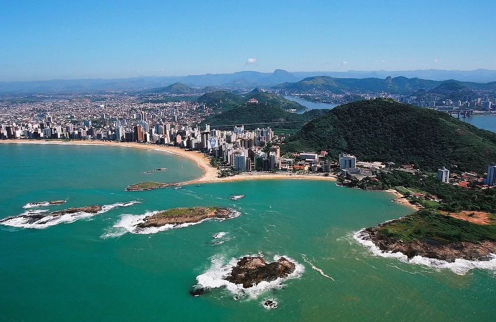

Vila Velha é um município brasileiro localizado no litoral do estado do Espírito Santo, na Região Sudeste do país. Pertence à Região Metropolitana da Grande Vitória e ocupa uma área de 210 km², sendo que cerca de 60 km² estão em perímetro urbano. Sua população foi estimada pelo IBGE em 506 779 habitantes em 2025, o que faz do município o segundo mais populoso do Espírito Santo, atrás apenas da Serra.
wikipedia